Exporting Our 'Elevation Only' Map for Map Values Scanning
The next step is to export our new map for first time to a bitmap, for the Flashpoint Map Values Scanner to scan it.
In typical QGis fashion, the first export will involve a bit of a hassle to set things up, but from then on exporting the bitmap will be trivial, without requiring any resizing or cropping in MS Paint or a Photoshop clone.
In QGis, we export a selected area of the map by making a Print Composer for this area, which captures the required scale and dimensions. Afterward, we just open the Print Composer and use it to export a bitmap.
To create the Print Composer for our 46×30 hex map, do the following. Use the "Project" menu, "Composers Manager", select a "specific" New from template, and press the "..." button to load the 46×30 print composer template.
Warning
If you are creating your second map, or are using the example project to start from, do not modify the existing fcrs_500_Minden print composer but make sure to create a new one.
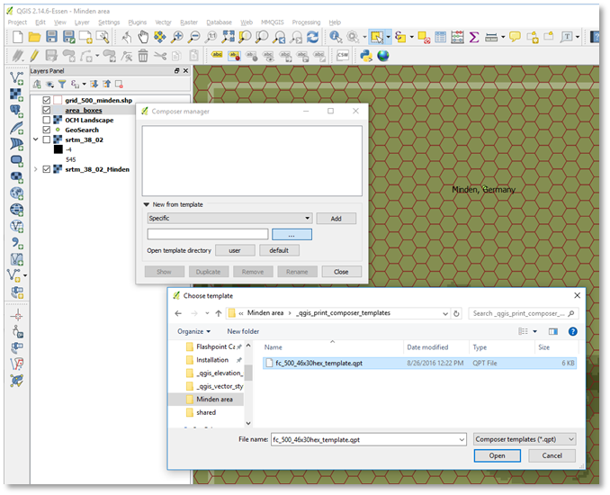
Figure 34 Creating a new Print Composer from the 46×30 hex template
With the template selected in the Composer Manager dialog, select Add. A new dialog will pop up to name the new Print Composer. Let's name it fcrs_500_Minden.
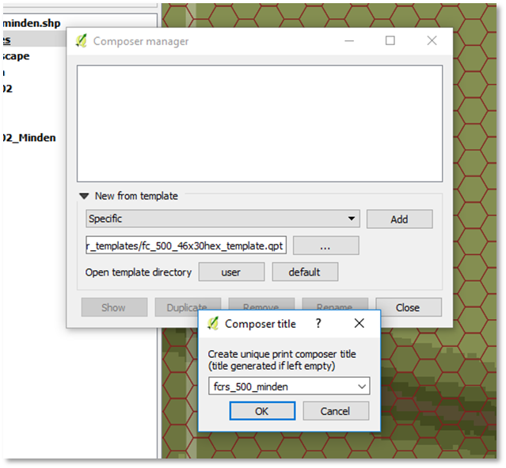
Figure 35 Naming our new Print Composer
The new fcrs_500_minden Print Composer will appear, with its own (blank) window.
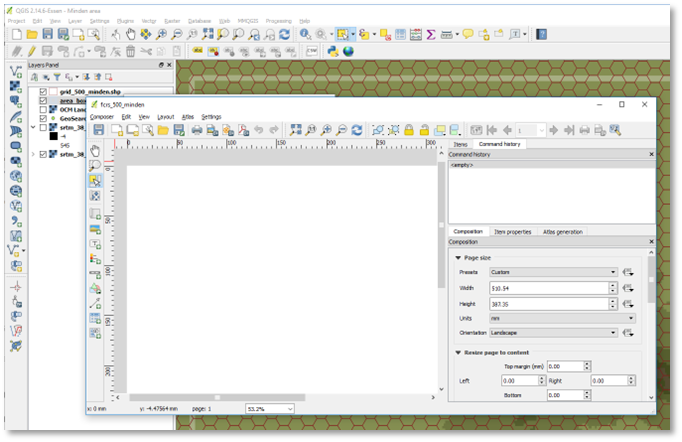
Figure 36 The Minden Print Composer in a new window
Start with closing the 'Command List' Panel and 'Items' Panel, since we don't need it. Select the Item Properties tab, then select the blank area in the main view. (The area is blank because it focused on an area of the map in Southern Germany for which we don't have elevation).
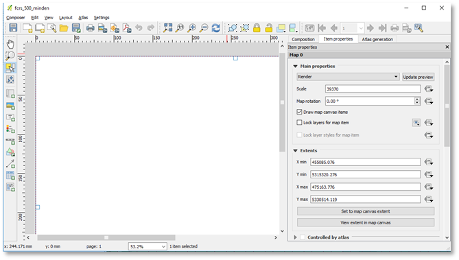
Figure 37 Default Scale and Map Extents of the Print Composer
To make this Print Composer print/export our Minden area, we need to change the extents in the Item Properties to match our map box but not change the scale (39370).
Note
the scale 39370 comes from 1000m / 1 inch since we're exporting a bitmap at 64 pixels per 500m hex or 128 per 1000m = 128 dots per inch).
Alt-tab to the QGis main window, select the area box layer, select our area box, and use View, Center on Selection to center the window on the area box. Alt-tab back to the print composer and press the "Set to map canvas extent" button.
The Print Composer will update to the following (zoom out to 25% using the control in the bottom row of the Print Composer):
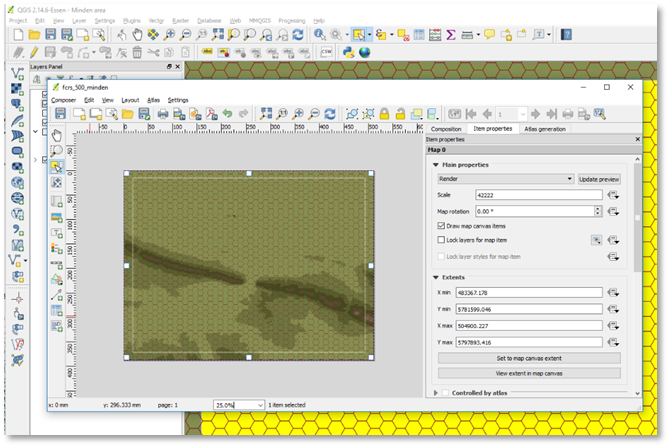
Figure 38 Focusing the Print Composer on the Minden area (but incorrect scale)
Next, correct the scale back to 39370, so the hexes are the 64-pixel height Flashpoint Campaigns: Cold War expects:
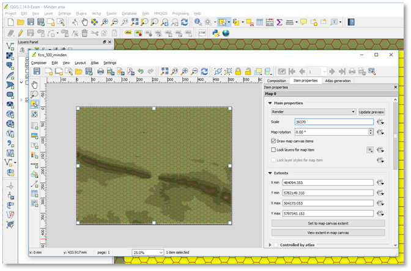
Figure 39 Minden area, at correct scale 39370 (but not perfectly aligned with the game’s hexes)
Next, we need to tweak the extents such that the hex grid perfectly aligns with the grid assumed by Flashpoint Campaigns. I don't know of a good way to solve this QGis, and just resort to a trial-and-error cycle of exporting to Flashpoint Campaigns and tweaking the Print Composer extents. As follows:
Step 1. Export to the map for scanning by Flashpoint Campaigns using the current extents. In the Print Composer, use "Composer" Menu, Export as Image, and save the image, for example, to our project folder:
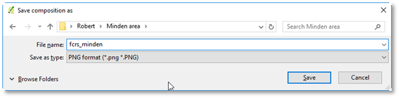
Figure 40 xporting our map for scanning by the Flashpoint Campaigns Map Values Scanner as fcrs_minden.png
In the next dialog, you should see the following settings (128dpi, width of approximately 2572 pixels). Just press Save for QGis to export the .png file.
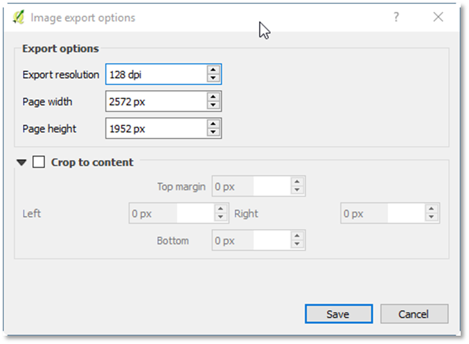
Figure 41 QGis automatically exports the image with the correct width and resolution
Step 2. Load the exported bitmap in the Flashpoint Map Values Scanner and check the hex grid alignment with yellow hex cursor.
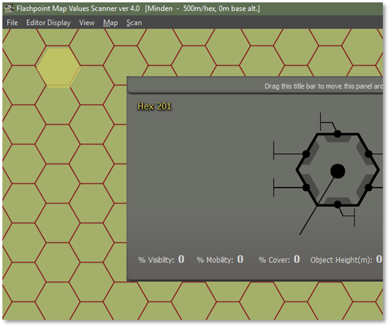
Figure 42 Flashpoint Campaigns Map Values editor with the exported QGis map, and the grid not aligning perfectly with the map cursor (yellow hexagon, top left)
Compare the hex shape with the grid in the exported QGis bitmap. Typically, the two will not line up perfectly, and we need to fix this in QGis.
The offset in this case seems about 1/20th of a hex horizontally to the left and 1/50th of a hex vertically (down). For a 500m hex, the offset thus corresponds to approximately 25m horizontally, and 10m vertically.
Switch back to QGis and our Print Composer. First fix the horizontal offset, subtracting 25m to the extents Xmin and Xmax:
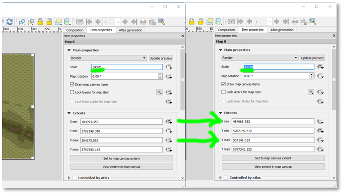
Figure 43 Tweaking the Print Composer extents to align with the game’s grid
With these extents, update the Print Composer (press Update preview), Repeat steps 1 and 2, also adjusting for vertical offset in Ymax and Ymin.
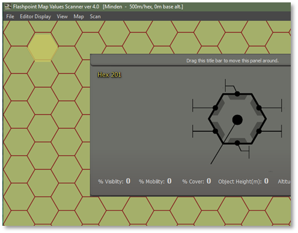
Figure 44 Offset reduced horizontally, but still requiring vertical tweaks...
Rinse and repeat until you get it spot on. This takes me typically 3 to 8 tries. However, these retries are less work than later trying to adjust polygons and polylines because they cross hex grid borders in FCSS.
Here is the result:
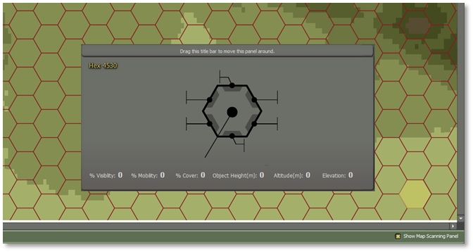
Figure 45 Well aligned Print Composer settings and Flashpoint Campaign game hex grid
Note
Especially for larger maps, be sure to check both the top left corner (hex 101) and bottom right corner of the map for alignment.
Now, let's save everything we have done. In the Print Composer, explicitly save the Minden Print Composer, using Composer menu, save as template (name fcrs_500_Minden).
In the QGis main window, in the Layers Panel, toggle off all the editing flags from any layer (and save the result, when prompted). Also save the project.
Add some organization to the Layers Panel, by introducing the following groups (using, in the Layers Panel, right mouse button, Add Layer Group):
-
Helpers
-
Manual Annotations
-
Elevation
Next, drag and drop the layer such that the elevation items are under elevation, and the area boxes are under helpers, as follows:
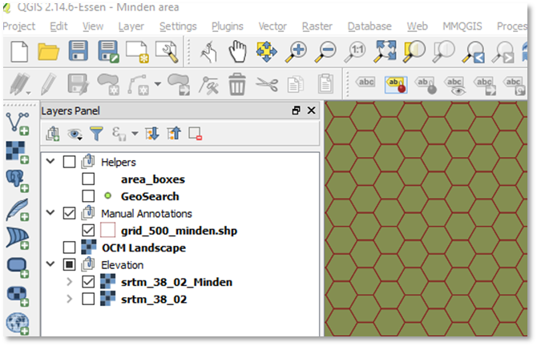
Figure 46 Some housekeeping done to our layers (ignore the GeoSearch layer; that layer and corresponding plug-in are no longer functional in QGis 2.x)
Finally, use the Print Composer again export the map as we should, with the area boxes and GeoSearch layers disabled.
Load the map into the Flashpoint Map Values Scanner again. This time, let’s fill out the map meta information, consisting of author information, map name, and altitude information. Under ‘Editor Display’, choose Author Details… to launch the following dialog:
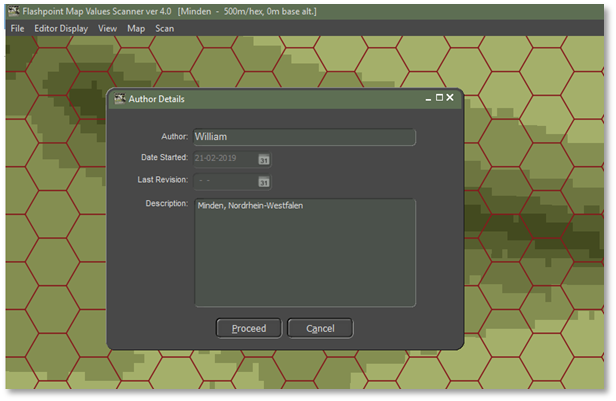
Figure 47 Map meta information: author information and map description
Press ‘Proceed’ to close this dialog. Next, and open, again under ‘Editor Display’, the Map Scale and Base Altitude dialog. The map scale cannot be changed (and is fixed to 500m hexes). For altitude, fill out the base level we have chosen for our elevation style in QGis (75m).
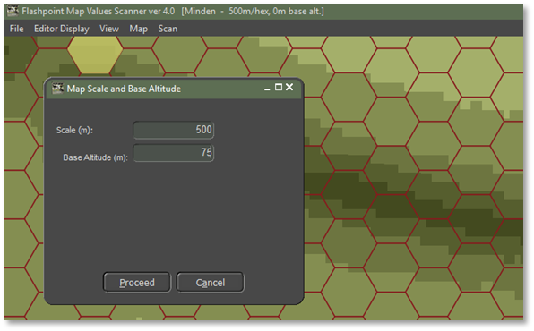
Figure 48 Map meta information: base altitude of 75m
Now, we can scan the bitmap for terrain properties (mainly elevation data, as that is all we have now). Choose, from the menu ‘Scan’, then ‘Scan Map’. (Or, alternatively, press the big ‘Scan for Map Values’ button in the bottom right corner).
After approximately one minute (longer for larger maps and slower computers), the map will have been scanned. A popup dialog appears, showing a summary of the findings:
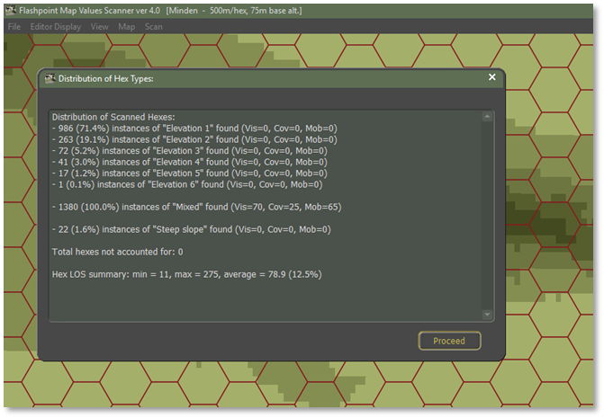
Figure 49 Map scanning results: six elevation levels, and twenty-two steep slopes
Press ‘Proceed’ to close the dialog. We can now inspect the scanning result. From the ‘View’ menu, choose ‘Elevation Values’ to have the elevation (from 0 to the maximum elevation) displayed.
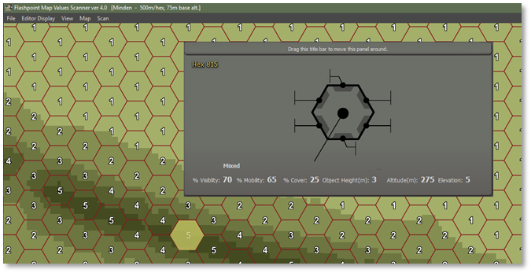
Figure 50 Elevation values after map scanning
Note that the selected hex also has its altitude defined (275m, being 4 elevation steps of 50m higher than the base altitude). Also, the object height in the hex is 3m (given its ‘Mixed’ terrain), which plays a role in line-of-sight computations.
From the View menu, you can inspect other attributes. % Visibility, %Cover, and %Mobility indicates the terrain impact on line-of-sight, on offering cover, and on impact vehicle mobility.
Altitude indicates per hex altitude value. Feature height (or object height) indicates the height of the obstacles / features in the hex, which impacts the ability of helicopters to fly low.
Hex identifier is the hex number identification the location, typically running from 101 to 4630 for 20x15km maps. The Hex Side Obstacles indicates hex side obstacles and steep hill sides:
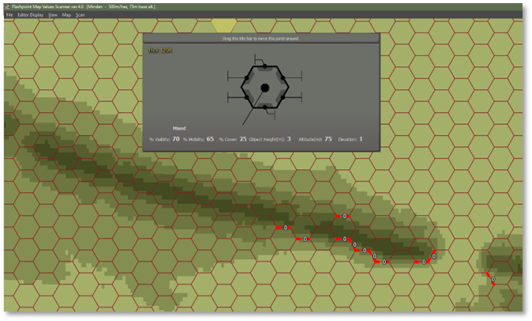
Figure 51 Steep hill sides indicated by the Hex Side Obstacles view
‘Road net’ displays the road net (we haven’t defined any) and ‘Surface type’ indicates dry of wet surface.
Save the result as fcss_minden.fp10.
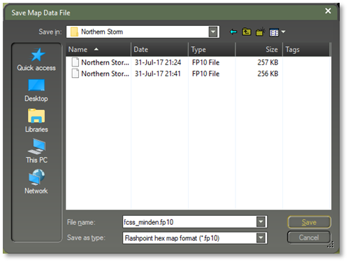
Figure 52 Save our scanned map as fcss_minden.fp10